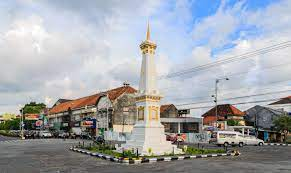
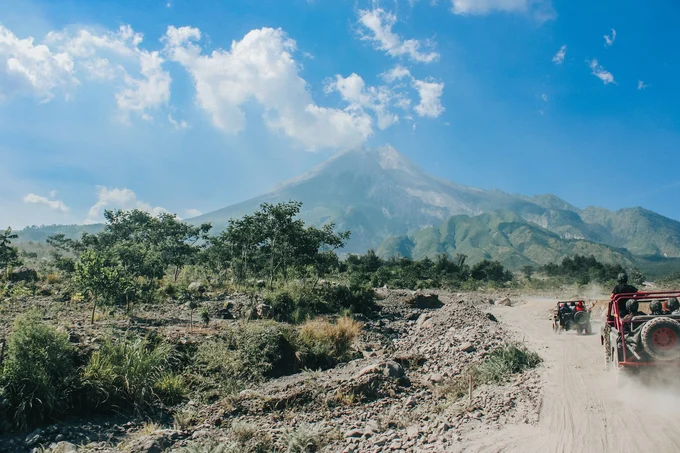

Sejarah

Berdirinya Kota Yogyakarta berawal dari adanya Perjanjian Gianti pada Tanggal 13 Februari 1755 yang ditandatangani Kompeni Belanda di bawah tanda tangan Gubernur Nicholas Hartingh atas nama Gubernur Jendral Jacob Mossel.
Isi Perjanjian Gianti : Negara Mataram dibagi dua : Setengah masih menjadi Hak Kerajaan Surakarta, setengah lagi menjadi Hak Pangeran Mangkubumi.
Dalam perjanjian itu pula Pengeran Mangkubumi diakui menjadi Raja atas setengah daerah Pedalaman Kerajaan Jawa dengan Gelar Sultan Hamengku Buwono Senopati Ing Alega Abdul Rachman Sayidin Panatagama Khalifatullah.
Adapun daerah-daerah yang menjadi kekuasaannya adalah Mataram (Yogyakarta), Pojong, Sukowati, Bagelen, Kedu, Bumigede dan ditambah daerah mancanegara yaitu; Madiun, Magetan, Cirebon, Separuh Pacitan, Kartosuro, Kalangbret, Tulungagung, Mojokerto, Bojonegoro, Ngawen, Sela, Kuwu, Wonosari, Grobogan.
Setelah selesai Perjanjian Pembagian Daerah itu, Pengeran Mangkubumi yang bergelar Sultan Hamengku Buwono I segera menetapkan bahwa Daerah Mataram yang ada di dalam kekuasaannya itu diberi nama Ngayogyakarta Hadiningrat dan beribukota di Ngayogyakarta (Yogyakarta). Ketetapan ini diumumkan pada tanggal 13 Maret 1755.
Geografis
Kota Yogyakarta memiliki luas wilayah tersempit dibandingkan dengan daerah tingkat II lainnya, yaitu 32,5 Km² yang berarti 1,025% dari luas wilayah Propinsi DIY.
Dengan luas 3.250 hektar tersebut terbagi menjadi 14 Kecamatan, 45 Kelurahan, 617 RW, dan 2.531 RT, serta dihuni oleh 428.282 jiwa (sumber data dari SIAK per tanggal 28 Februari 2013) dengan kepadatan rata-rata 13.177 jiwa/Km²
Kota Yogyakarta terletak ditengah-tengah Propinsi DIY, dengan batas-batas wilayah sebagai berikut
-
Sebelah utara : Kabupaten Sleman
-
Sebelah timur : Kabupaten Bantul & Sleman
-
Sebelah selatan : Kabupaten Bantul
-
Sebelah barat : Kabupaten Bantul & Sleman
Kondisi tanah Kota Yogyakarta cukup subur dan memungkinkan ditanami berbagai tanaman pertanian maupun perdagangan, disebabkan oleh letaknya yang berada didataran lereng gunung Merapi (fluvia vulcanic foot plain) yang garis besarnya mengandung tanah regosol atau tanah vulkanis muda Sejalan dengan perkembangan Perkotaan dan Pemukiman yang pesat, lahan pertanian Kota setiap tahun mengalami penyusutan. Data tahun 1999 menunjukkan penyusutan 7,8% dari luas area Kota Yogyakarta (3.249,75) karena beralih fungsi, (lahan pekarangan)
Tempat Wisata
Jogja memang lengkap banget. Semua jenis tempat wisata ada di Jogja, dan semuanya terasa menyenangkan buat dikunjungi. Kota Pelajar ini punya segalanya: baik itu tempat wisata budaya, kuliner, wisata alam, hingga wisata yang "Instagramable" pun ada.
Baik itu kamu pertama kali liburan ke Jogja, atau udah berkali-kali dan butuh ide tempat wisata baru yang bisa dikunjungi, kamu bakal menemukannya di daftar rekomendasi tempat wisata di Jogja ini!
Malioboro
Jelas saja tempat wisata di Jogja yang satu ini wajib ada di nomor 1. Kamu betul-betul belum ke Jogja namanya kalau enggak mampir atau paling enggak lewat Jalan Malioboro!
Kraton Yogyakarta

Jogja adalah sebuah Daerah Istimewa, yang dipimpin oleh seorang raja yaitu Sultan Hamengkubuwono X. Seorang raja tentu saja butuh istana, dan Kraton Yogyakarta adalah istananya. Sejarah panjang Kesultanan Yogyakarta pun bisa kamu lihat langsung di sini.
Kamu bisa mengunjungi Kompleks Utama Kraton Yogyakarta yang dibuka untuk umum pada pukul 08.30 - 13.00 WIB, kecuali Jumat hanya sampai 11.00 WIB. Ada pemandu yang bisa menemanimu menjelajahi area Kraton. Tetapi kalau kamu ingin berjalan-jalan sendiri pun tak masalah.
Lereng Gunung Merapi

Ada dua pilihan yang bisa kamu pilih untuk mengunjungi Gunung Merapi: mendakinya ataupun mengikuti tour dengan mobil jeep ke area Kaliadem di lereng Gunung Merapi. Jika mendaki menjadi pilihanmu, kamu tentu harus memiliki persiapan ekstra karena mendaki Gunung Merapi tidaklah mudah. Namun jika tour dengan jeep, kamu bisa melakukannya kapan saja.
Kamu bisa memesan private Jeep Tour, di mana kamu bisa memilih berapa jumlah rombongan yang akan mengikuti tour ini. Kamu bisa melihat langsung Bunker Kaliadem, bekas-bekas letusan Gunung Merapi beberapa tahun lalu, dan tentu saja, kegagahan gunung ini dari dekat!